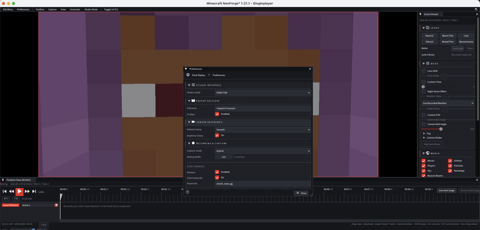

Wiki tecnica per creator e sviluppatori addon.
Troubleshooting tecnico
Problemi comuni, cause probabili e controlli concreti prima di chiedere supporto.
Free downloadAll Rights ReservedNeoForge 1.21.1

01
La mod non compare
- Controlla che il loader sia NeoForge e la versione Minecraft sia quella supportata dalla build.
- Verifica che il
.jarsia nella cartellamodsdel profilo corretto. - Avvia senza mod non essenziali se sospetti un conflitto di caricamento.
02
Recording non parte
- Controlla keybind non assegnati o in conflitto.
- Se usi per-server policy, verifica che il server non sia impostato su OFF o MANUAL quando ti aspetti auto-start.
- Se usi automazioni, ricorda che sono disattivate di default.
03
Save Last non salva quello che volevi
- Aumenta rolling retained seconds.
- Aggiungi pre-roll e post-roll.
- Usa Hybrid per sessioni lunghe dove vuoi limitare il disco.
- Premi il keybind appena dopo l'evento, non molto tempo dopo.
04
Export lento o pesante
- Riduci risoluzione o FPS.
- Disattiva SSAA.
- Usa bitrate piu basso o CRF piu alto.
- Chiudi shaderpack pesanti o scegli un export shader pack piu leggero.
- Per debug, esporta un range breve prima del render finale.
05
Entita o particelle indesiderate
Usa Render Filter prima di esportare. Se hai nascosto qualcosa e poi non lo vedi piu, riapri Render Filter e controlla i filtri attivi prima di segnalare un bug.